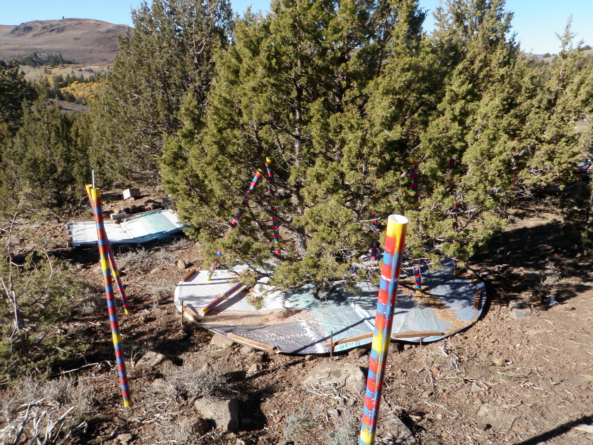

Interception
When precipitation (rain or snow) occurs, it either goes straight to the leaf litter or soil or is intercepted by the canopy. Precipitation intercepted by the canopy either falls to the leaf litter or soil or evaporates. Finally precipitation in the leaf litter either infiltrates to the soil profile or is lost to evaporation. A large portion of intercepted precipitation is evaporated to the atmosphere and therefore does not enter the soil profile (Calder, 1998). Precipitation interception by either the tree canopy or the leaf litter is a major component of the land surface water cycle, consisting of as much as half of the precipitation in some systems (Hörmann et al., 1996; Carlyle-Moses, 2004). Interception can range from 11 – 36% in deciduous forests and 9 – 48% in conifer forests (Hörmann et al., 1996). Semi-arid systems are water limited, and even small changes to the hydrologic cycle from increased interception can cause drastic changes to the system.
Canopy interception loss in rangelands can range from 1% to 80% of the annual water budget, but is typically between 20% to 40% (Wilcox et al. 2003). Piñon and juniper plant-level interception ranges from 14% to 71% (Collings 1966; Young et al. 1984; Eddleman and Miller 1991; Larsen 1993; Taucer 2006; Owens et al. 2006). In our study at RCEW, interception for the 34 events smaller than 5 mm was 84.0% and 48.7% for the 18 events larger than 5 mm.
(could put a plot of all the juniper interception studies, or could put a stand level interception)

Information on this page is based on this publication, where you can find more detailed information about this study.